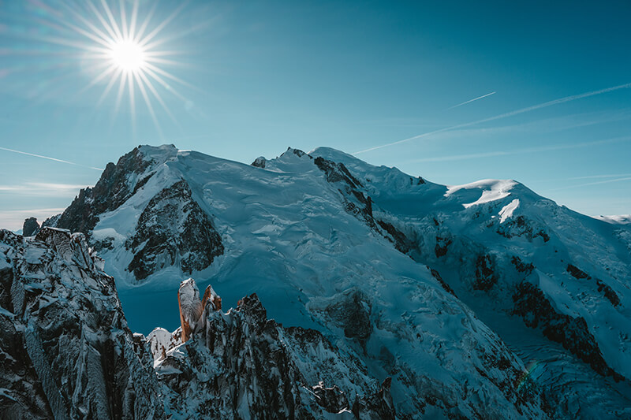

the <picture> and <source> Elements
Most Basic picture tag, with height and width set up

selecting an image based on a media query
this can also be achieved by using srcset and sizes from img
this shows which browser support which media format
and this is how sprite works